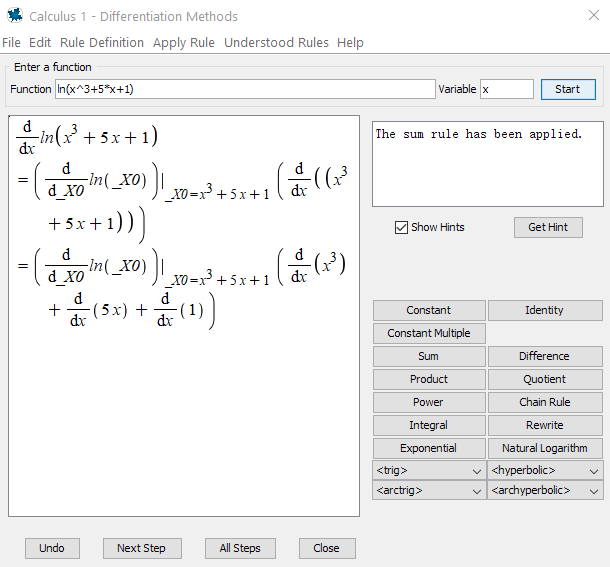

Lab 6 Logarithmic and Exponential Functions
6.1 Basic properties and graphs
The natural logarithmic function \(y=\ln(x)\) is defined by \(\ln(x)=\int_1^x\frac{1}{t}\mathrm{d} t\).
The natural exponential function \(y=e^x\) is defined as the inverse function of \(y=\ln(x)\).
From the definition, we have very important identities \[ \ln(e^x)=x\qquad \text{and}\qquad e^{\ln x}=x. \]
Using those two identities, we may define general exponential functions and general logarithmic function, and deduce the Law of Logarithms and Law of Exponents.
For any positive number \(b\ne 1\), we have \(b^x=(e^{\ln b})^x=e^{x\ln b}\).
For any positive number \(b\ne 1\), we define \(y=\log_bx\) to be the inverse function of \(y=b^x\)
By solving \(x=b^y\) for \(y\), we find that \(\log_bx=\dfrac{\ln x}{\ln b}\). This identity is called the change of base property.
How do graphs of logarithmic functions and exponential functions look like?
Example 1.1 Graph the following functions together. \[ y=\ln x, \qquad y=e^x, \qquad y=2^x, \qquad y=\log_2x, y=x. \]
Solution.
In Maple, the logarithm \(\log_bx\) is given by log[b](x). When \(b=e\), you simply use ln(x) for \(\ln x\). When \(b=10\), you may also use log(x) or log10(x) for \(\log_{10}x\).
The exponent \(b^x\) is given by b^x in Maple. When \(b=e\), you may also use exp(x) to represent \(e^x\).
To graph the functions together with different colors, we use the following command
plot([ln(x), exp(x), 2^x, log[2](x), x], x=-5..5, color=[blue, green, purple, yellow, red])Here is the output

Graph of some logarithmic and exponential functions
Exercise 1.1 Graph the following functions together. \[ y=\log_3x, \qquad y=3^x, \qquad y=(1/3)^x, \qquad y=\log_{1/3}x. \]
Find the pairs that are symmetric to each other with respect to a certain line.
Exercise 3.1 Graph the following functions together. \[ y=0.5^x, \qquad y=2^x, \qquad y=5^x. \]
Describe the monotonicity (increasing/decreasing) of the functions?
Fix an input \(x\). Describe how \(y\)-values change when bases changes from small number to bigger number?
Exercise 3.2 Graph the following functions together. \[ y=\log_{0.5}x, \qquad y=\log_2x, \qquad y=\log_{5}x. \]
Describe the monotonicity (increasing/decreasing) of the functions?
Fix an input \(x\). Describe how \(y\)-values change when bases changes from small number to bigger number?
6.2 Differentiation and integration of logarithmic and exponential functions
In Maple, one way to do differentiation and integration is to use the Calculus Palette on the left side.

Calculus Palette in Maple
The other way is to use the commands diff(f(x), x) , int(f(x), x), and int(f(x), x=a..b).
Supported by the Student[Calculus1] package, Maple also provides the tutor commands DiffTutor() and IntTutor() which can show step-by-step solution of differentiation and integration.
Note you may also access tutor commands from the Start page (click the home button in the toolbar and look for Calculus).
Solution.
Using diff:
diff(ln(x^3+5*x+1), x)We get \[ y'=\dfrac{3x^{2}+5}{x^{3}+5 x+1}. \]
Type in (assume that with(Student[Calculus1]) was run)
DiffTutor(ln(x^3+5*x+1), x)and hit enter you will see

By click Next Step or All Steps you will see detailed solution with rules used.
Solution.
Using int:
int((exp(x)-1)/(exp(x)+1), x)We get \[ \int\dfrac{e^x-1}{e^x+1}\mathrm{d} x=2 \ln \left(\mathrm{e}^{x}+1\right)- x+C. \]
Type in (assume that with(Student[Calculus1]) was run)
IntTutor((exp(x)-1)/(exp(x)+1), x)and hit enter you will see

By click Next Step or All Steps you will see detailed solution with rules used.
Exercise 1.4 Find the derivative \(\frac{\mathrm{d} y}{\mathrm{d} x}\), where \(y=\ln|\cos x|\)
Exercise 3.3 Find the derivative \(\frac{\mathrm{d} y}{\mathrm{d} x}\), where \(y=x^{\cos x}\)
Exercise 3.4 Evaluate the integral \[ \int \frac{\left(e^{4x}+e^{2x}\right)}{e^{3x}} d x \]
Exercise 3.5 Evaluate the integral \[ \int 2^{3x} d x \]